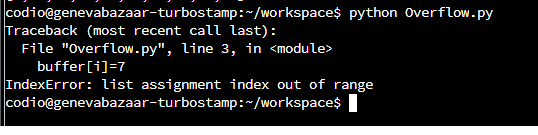

In unit 3 we were introduced to programming languages , their
history and concepts but also on buffer overflow activities.
Additionally there was a team activity discussion on the security of
programming languages and on whether python is a secure programming
language.During unit 3 preparatory work on the design document for the team project was also carried out as shown below.
Buffer Overflow Activity
Running the Python overflow file we can clearly see that there is an IndexError (an overflow) as the for loop index is moving out of range. Looking into the output of pylint we can see that no error is raised as pylint does not check the logic of the for loop.
Running the file we can see the overflow

Which can be corrected by changing the index within limits
Development Team Project: Design Document
For developing the team project the team was assembled and we created the necessary workspace to work together as shown below.
I volunteered on the task of analysing the proposed design using the STRIDE framework in combination with RTMP , rapid threat model prototyping technique (Hill,2022) to identify quickly zones of trust and access level zones based on the trust boundaries of the system design. Subsequently threats are identified by applying STRIDE and in combination with OWASP's top ten adequate technical controls and mitigations are planned.
References
Chapple, M; Steward, J. M.; and Gibson, D (2021). CISSP Certified Information Systems Security Professional – Official Study Guide – 9th Edition, John Wiley & Sons, Inc, 1250 pages.
Hill, G. (2022). Rapid Threat Model Prototyping. Available from: https://github.com/geoffrey-hill-tutamantic/rapid-threat-model-prototyping-docs [Accessed 20 November 2022].